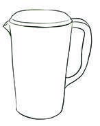
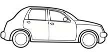
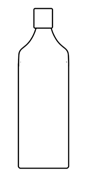
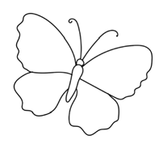

Exercise 2: Write sentences and draw pictures
Exercise 2
Write the following sentences.
Draw and colour these pictures in your relevant writing materials

A picture of a black outline of a jug with a handle, ready to be coloured blue.This jug is blue
Thisjugisblue

A picture of a black outline of a side-view car with wheels and windows, ready to be coloured red.This car is red
Thiscarisred

A picture of a black outline of a tall bottle with a narrow neck, ready to be coloured yellow.This bottle is yellow
Thisbottleisyellow

A picture of a black outline of a butterfly with two upper wings, two lower wings, antennae, and a central body, ready to be coloured purple and pink.This butterfly is purple and pink
Thisbutterflyispurpleandpink